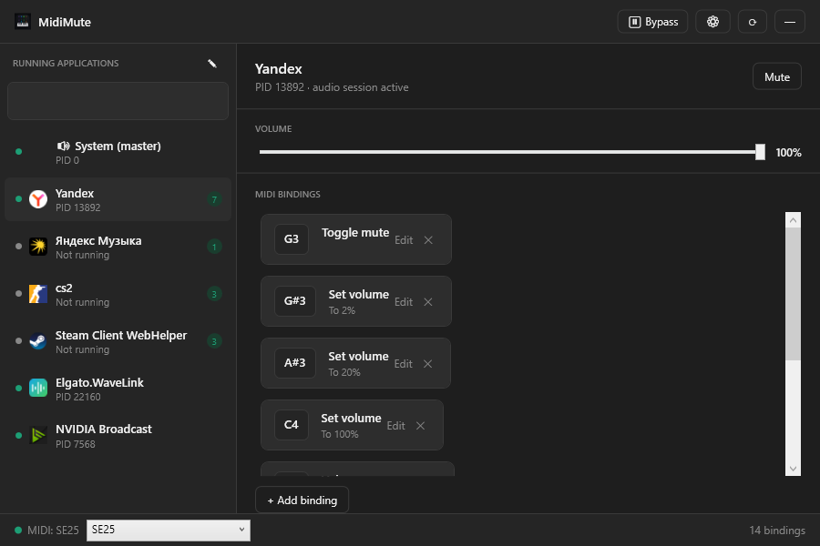
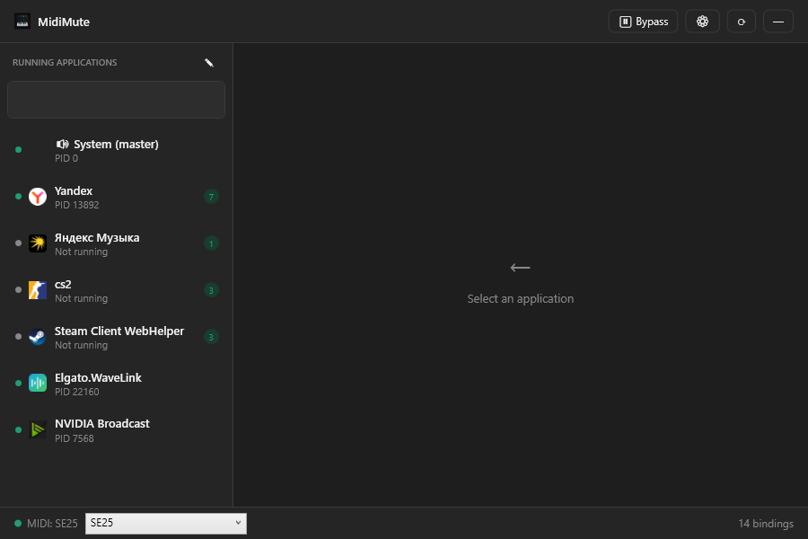

Per-app volume
Control active Windows audio sessions for browsers, music apps, games, calls, and more.
Open-source Windows utility
Bind MIDI keys to mute, lower, or set volume for individual Windows apps without opening the volume mixer.

What it does
Control active Windows audio sessions for browsers, music apps, games, calls, and more.
Map notes to toggle mute, hold mute, volume up/down, set volume, or temporary lowering.
Bind MIDI controls to the main Windows output when you need a global fallback.
Download, extract, and run. Settings can be imported, exported, and backed up.

Workflow
MidiMute detects available MIDI inputs and reconnects automatically.
Pick the app or master output you want to control.
Press a MIDI key, choose an action, and keep working without opening the mixer.
Early release
MidiMute is Windows-only and depends on Windows audio sessions. Some apps may appear only after they start playing sound.